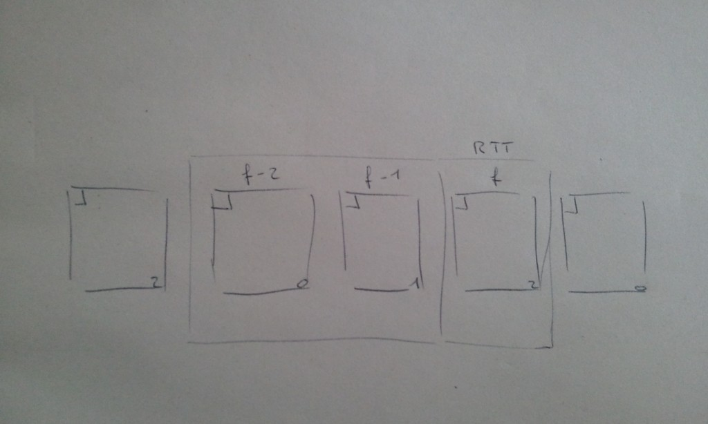
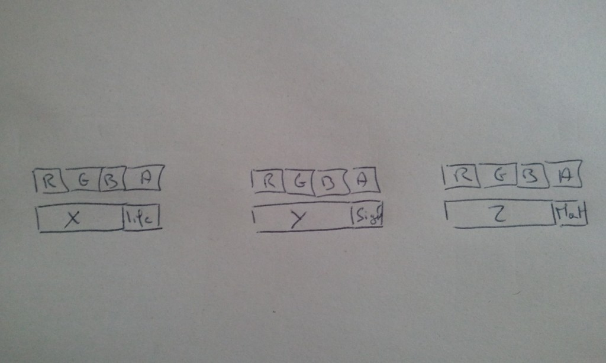
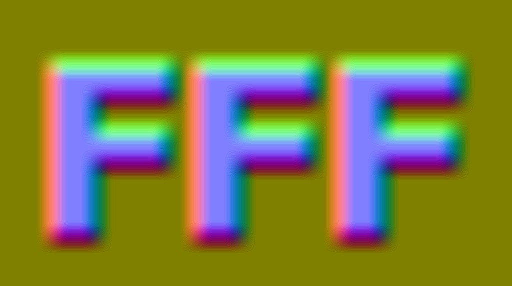
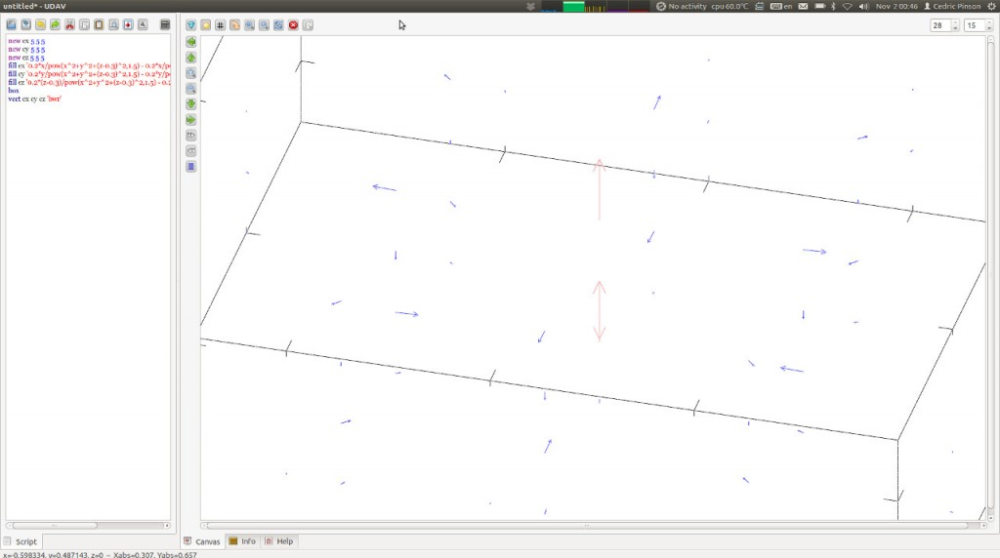

DemoJS
Tue 27 December 2011 ?? CommentsWe had a meeting a few months ago before the demojs event in Paris to organize it. I worked on the intro to announce the event 10 days before the deadline. 4 of us made this intro: Guillaume Lecollinet who helped on design and css stuff, Ulrick for the music and Mestaty for 3d models, both are from FRequency demo group and I worked on the code. If you are interested in particles you really need to read this blog. This guy does awesome things.
Particles again
At the beginning I did not really know what I wanted to create. I wanted to work on particles but with more complexity than my previous toy. Finally I did an intro only with particles. The consequence is that the entire intro used the same shader, I will describe the following stuff I used into the intro.
- Verlet physic integration
- Spawning particles
- Distance map
- Velocity field
- Morphing of 3d models
Verlet Integration
Verlet integration in a nutshell is a numerical method used to integrate Newton's equations of motion. There is a good blog and examples how to use it. In webgl we can't use render to texture on floating point texture. In fact we can use an extension but I wanted to make it works on most browser with webgl so I did not use the extension. The consequence is that particles coordinates has to be encoded in specific format on rgba pixels.


In my previous particles toy I used 16 bits fixed point to encode coordinates, but on this one I wanted to improve it and try 24 bits to have more precision, I encoded more informations like signed distance, life of particle, or material id in pixels. (picture above left). In webgl there is no multi render target and I had to draw the scene 3 times to compute particle's positions, for x, y and z. To select each dimension I wanted I used a uniform. Finally to compute a 'next' frame (3 textures) it required 'current' frame (3 textures) 'previous' frame (3 textures), in final I needed 9 textures to just have the verlet physic running without controlling their motions. For this I used others textures I will describe after. Texture size . To not hurt too much my gpu, I fixed the texture's size to 512x512, meaning 262144 particles. We could
Spawning particles
To determine the life span and position of new particles, I used uv range of particles to distributes them in space. It's not really elegant or pratical for bigger projects/shapes. For example, the equalizer scene was done allowing particles on a plane where equalizers were. Basically there is a range 0.25 in 'u' per equalizer bar and I limited the v to 0.5. So we have 0.25*(4 equalizer) and v limited in 0.5 it means 0.25*4u + 0.5v = 131072 particles allocated for equalizers, and the 131072 others are used for the 3d models. Next time I would like to try 'mesh emitter' or something more useful than doing it manually.
Distance Map
What is a distance map ? you can read this paper from valve that explains how it works. Distance map is a really useful tool to control particles. In the intro I used texture that encodes distance map and gradient (the vector that tells you which direction to take to go to the nearest point on the shape). For this I created a tool (DistanceMapGenerator) and then I computed the gradient from the distance map. Finally I constructed a texture that contains both pieces of information. During the computation of the position I take the signed distance of this position to fit the shape I want, eg:
vec3 getDirection(vec3 pos) {
vec4 d = texture2D( DistanceMap, vec2(pos.x, pos.z));
vec2 grad = d.rg;
vec3 dir = vec3(0.5-grad[0], 0.125*(0.5-pos.y), 0.5-grad[1]);
dir = normalize(dir);
return dir;
}
float getDistance(vec3 pos) {
float d = texture2D( DistanceMap, vec2(pos.x, pos.z)).b;
return d;
}
// here I know at wich distance my particle is from the nearest border
distance = getDistance(currentPosition)*weightDistanceMap;
// and here I know in wich direction the nearest border is
direction = getDirection(currentPosition)*weightDistanceMap*0.4;
// it's easy after to use this direction to create a force and make the
// particle go in the direction of the shape`

This technique was used for most of the motions/shapes I wanted the particles to fit in. I tried to manipulate particles manually but it was too complex and I was not able to do what I wanted to. Distance maps is really easier.
Velocity field

To add some perturbation motion like 'procedural wind' I used a MathGL/udav tool. The idea was to find a nice formula I could use in the shader that produces nice motion. For that I used udav to display the vector field from the formula. Once I was happy with the vector field, I added some variation in real time depending on time. This tool was not really convenient and maybe next time I will write something to help me with this. Once the formula was selected I used a lookup to get my vector depending on particle's position. It looks like this below:
vec3 getVelocityField(vec3 pos) {
float t = mod(time,15.0);
//mod(time, 5.0);
float vx = 0.0+cos(0.5+2.0*(pos.x*pos.x*t));
float vy = cos(4.0*(pos.y*t+ seed*0.5)) + seed * sin(4.0*pos.x*t*t);
float vz = cos(pos.z*2.0*t);
vec3 vel = vec3( vx, vy, vz);
return normalize(vel);
}
3D models
At the end of the intro I used morphing between different 3d models ( the firefox logo, and the abstract model formed of cube ). To use those models with particles I first had to convert them into a suitable format for the particle system, meaning into textures that would encode the model's position as rgb pixels. The particle system used 262k particles but models used up to 131k vertexes ( remember 131k particles were allocated for the equalizers ). So we have 131k particles to display morph and animate our 3d models. The morphing between the different shapes works with a lerp between position ( finalVertex = model0*t + model1*(1.0-t) ). To add some perturbation to the motion we still add the 'fake wind' during the animation. If you want to check the tool to build vertex to texture format used by the particle system look here. It's a plugin for openscenegraph.
Music
The music was done by Ulrick from FRequency and they used their own tool to export pattern events in a c++ header. I made a little script to convert the result into json, and then I injected events data into timeline.js. Timeline.js was great but I needed to patch it to support callback and use an external time, the one that came from the music.
Improvements
There is a lot of stuff I would have wanted to do better but 10 days was too short. So I discarded lighting on particles, shadow, spawn mesh emitter, post process effect, smoke simulation with sph. Maybe the next time I will play with particles I will be able to add some of those elements.
links
- Intro fff or the video
- directtovideo
- codeflow
- FRequency
- osgjs
- DistanceMapGenerator
- model to texture
- demojs.org
- Timeline.js
Thanks for people who helps to make this webgl intro it was really fun. The most stuff I liked was the good ambience of the team, that was really cool. Thank you guys :)